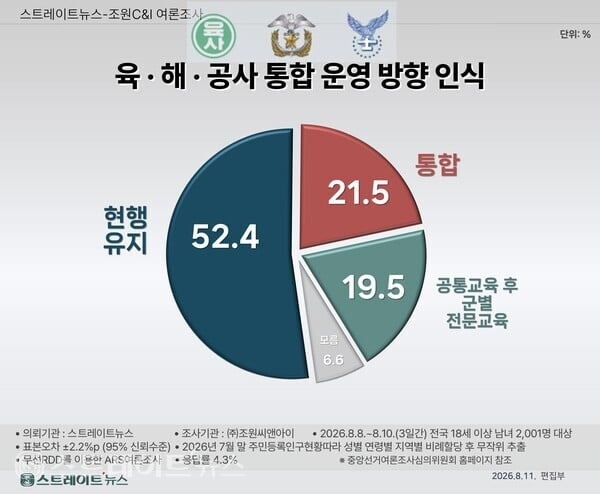

통합 찬성은 21.5%
현행 유지 52.4%
현실적으로 야전 가서 하는 제병협동도 뒤지게 어려운데
바다없는 해사랑 활주로 없는 공사가 큰 밭에 모여서
3군 뭐시기를 하기는 뭘 하겠다는거냐
자운대 정도 입지 조건이면 거의 대전에서
계룡 가는 수준보다 힘들다고 보면 된다
대군을 갖춘 국가는 각기 분리된 사관학교를 갖추고 있고
그에 한참 못미치는 작은 군대를 가진 이들이나
통합사관학교를 갖는 것이며 그조차 없는 이들은 세계대전
패전국들이거나 그냥 군 규모가 매우 작은 애들인데
왜 스스로 안보를 씹창내려하나
지금 사관학교 지원율이 과거만큼 높은 것도 아니고
장교가 선망받는 직업으로 각광받는 것도 아니다.
통합교육 그렇게 중요하면 수천명 뽑는 육해공 학군단이나 하시든가
학군단은 나갈까봐 너무 무서워서 훈련도 풀어주는 개병신짓을 하는 주제에
꼴랑 수백명따리한테 뭘 하겠다고
댓글
수집 당시 댓글 30개
부분과다른전체 · 2 일 전
선관위 특검하고 있고 손 놓고 있는 것은 아님. 근본 문제는 개헌사항이라 한계가 있음
거기큰타이거 · 2 일 전
눼눼
노엘갤러거스하이플라잉버즈 · 2 일 전
털달린바퀴벌레 · 2 일 전
주요 국가중에 자위대 운용하는 일본 말고는 통합사관이 없는데 개지랄병.... 실전 많이 겪어본 미국 러시아가 통합사관 운영하냐?
스위치2좋아 · 2 일 전
도대체 시발 이해할수없는 짓을 왜케 많이하냐 국민들이 반대해도 진행하고 그러는 도중에 또 옳그떠 관련해서 국민들 싸우고
오늘도야근이다 · 2 일 전
대한민국을 약화시키는데 누구보다 열심히인 ...
거기큰타이거 · 2 일 전
어쩌고저쩌고때 예산안 하나 통과 안시켜줌 ㅋㅋㅋㅋㅋㅋ 대단한 곳임
13번째아해 · 2 일 전
합동성 강화가 아니라 쿠데타 방지가 이유라고? 미쳤나 이게
그리피스 · 2 일 전
조선 꼴 보는거 같네
곰곰배추김치 · 2 일 전
정사판 버러지들 개빡쳐서 몰려오겠네 ㅋㅋㅋㅋ
모두예할때아니요함 · 2 일 전
개들 제발 정사판으로 왔음 좋겠다 그냥 개드립에 정치글 써도 승희가 제제 안한다고 정사판 왜 감? ㅋㅋ 이러던데
sjw3ur · 2 일 전
VIP 개병신 새끼 생긴것도 설취류임ㅋㅋ
포뇨오 · 2 일 전
의대처럼 1학년은 그렇게 통합교육하고 2학년부터 각 사관학교로 가서 교육하면 안되나? 공툥교육이 차지하는 비중이 얼만지를 모르겠네
방수원단 · 2 일 전
공통교육이고 뭐고 이건 시발 의대같은게 아님ㅇㅇ 군대 갔다 왔으면 생각해봐라 육해공 이병들 데리고 통합교육 시키는게 말이된다고 생각함?ㅋㅋㅋㅋㅋㅋㅋㅋㅋ
포뇨오 · 2 일 전
신교대나 후반기교육처럼 1학기 혹은 1년동안은 그렇게 같이 받아도 되지 않을까? 모여서 경쟁시키면 나쁘진 않을거 같은데
그리피스 · 2 일 전
육군 교리 해군 교리 공군 교리 전부 방향성이 다른데 뭔 모아서 경쟁이야
포뇨오 · 2 일 전
아니 뭐 그래도 기본제식부터 공통적으로 알아야 할 부분이 있지 않을까? 몰라서 적은거긴함 그런 부분이 있으면, 경쟁하면 애들 열심히는 할 거 같잔아
하버나 · 2 일 전
이건 질문이 좀그래 육사가 사관학교 중 가장 힘이있고 카르텔의 원천이 되는 상황, 또 쿠데타 모의 등을 깨기위해서 통합추진하는건데 질문을 육사카르텔이 존속해야한다고 보십니까 로 바꾼다면?
방수원단 · 2 일 전
질문이 뭔 그래 시발ㅋㅋㅋㅋㅋㅋㅋ 육사가 시발 이번에 계엄령 일으킴? 존나 걍 시발 개웃기네ㅋㅋㅋㅋㅋㅋㅋㅋㅋㅋㅋㅋ 질문을 개시발 바꿔도 걍 개좆병신 좆장애인새끼들이나 추진하는 정책인데?
모덴군 · 2 일 전
내란수괴들 가운데 육사출신이 드글거리는게 사실인데. RT출신 장교가 국회 가라는 명령 씹고 총부리 돌려서 실패한거고.
키티호크 · 2 일 전
지금 나라 꼬라지 보면 그때 계엄이 성공했어야 했나 싶은데...?ㅋㅋ
거기큰타이거 · 2 일 전
대단하다. 육사카르텔!! 부랄을 탁치고 갑니다!! 선생님. 정말 똑똑하십니다
그리피스 · 2 일 전
육해공이 뭉쳐서 한번에 쿠데타 일으킬건 안무서움?
Varkode · 2 일 전
사회 곳곳에서 엘리트주의로 파벌만들고 이번에도 계엄도 때린 서울대는 해체해야겠지?
하버나 · 2 일 전
서울대, 육사해체가 목표는 아니고 카르텔이 생길 수 있는 엘리트코스라든가 이걸 지속적으로 통제관리해야한다는 생각임 물론, 급진적인 면도 있다고 생각하지만, 권한없는 일개 시민의 생각일 뿐이라고
Varkode · 2 일 전
통제관리 해야하는데 그 방법이 해체는 절대아님 사관학교 해체는 승전국이 패전국에게 요구하는, 아주 받아들이기 어려운 내용인건데 그걸 아무런 대책도 없이 스스로 한다? 이건 걍 간첩질이랑 다를게 없는거임 대책이라도 잘 세우든가 나같은 사람도 30분이면 제미나이로 만들법한 ㅈ같은 지도같은걸 예시로 가지고와서 국민들한테 보여주는게 말이 되냐? 이건 해체 후 재편성으로 하여금 상황개선을 하겠다는게 아니라 단순히 어느 조직에 대한 보복에 가까움
굳이써야하나 · 2 일 전
신냉전과 휴전중에 스스로 약해지는 군대가 있다? ㅋㅋ
키티호크 · 2 일 전
진짜 세상에 이걸 하는 나라는 일부러 국가 체제 전복시켜서 독재할라고 했던 베네수엘라 말고 또 있음? 과거에 그랬다고 지금 이걸 이 지랄하는게 맞냐? 가뜩이나 약해지는 군대에 기름을 들이 붓네 진짜
와라라라랑 · 2 일 전
ㄹㅇ ㅂㅅ들이야 냅둘건 냅둬야자 ㅂㅅ짓만 해
포코 · 2 일 전
이런건 아는사람이 해야맞는거지 무작위 투표로 한다는게 빠가사리 인거아냐?